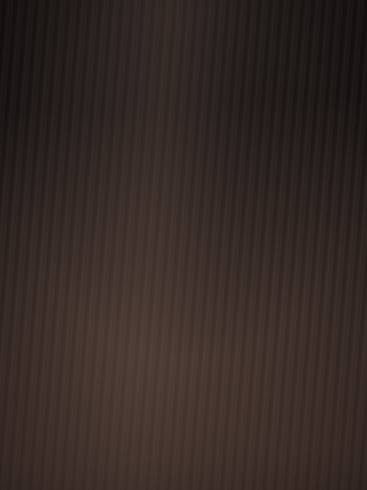
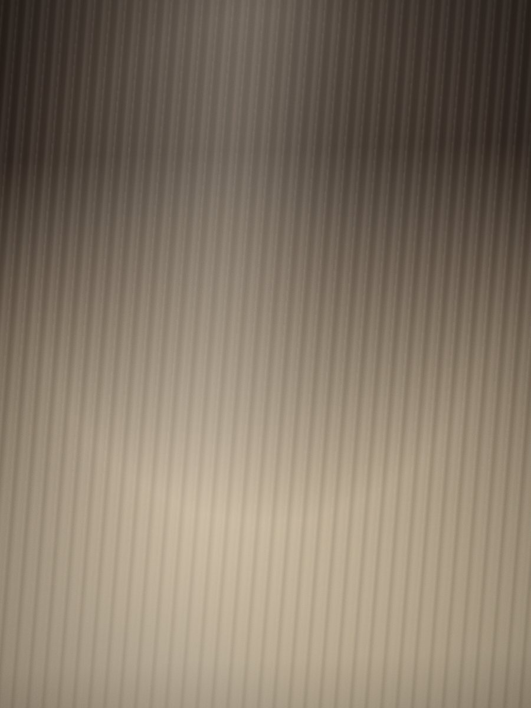
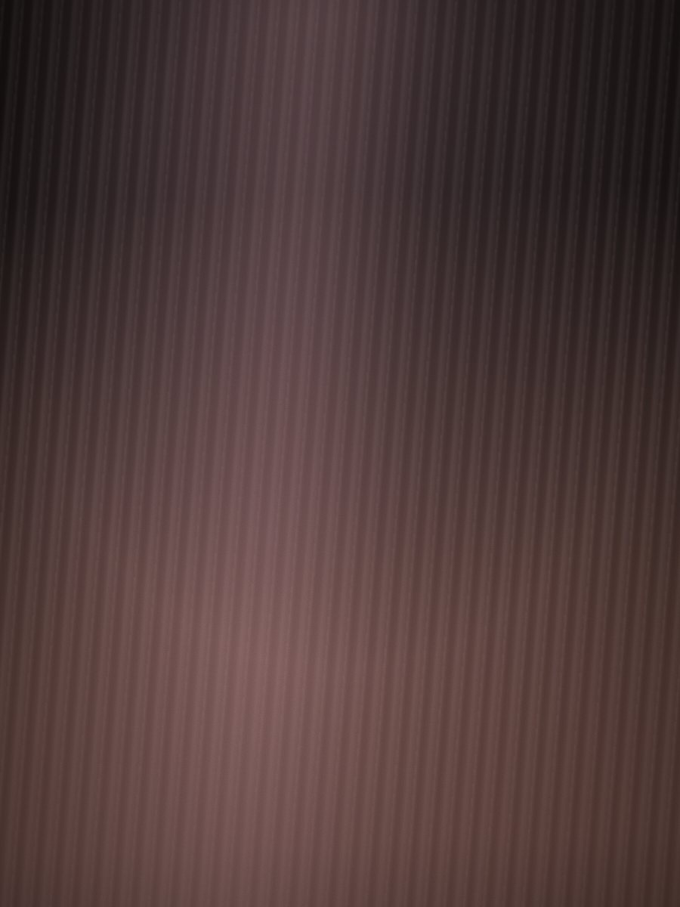
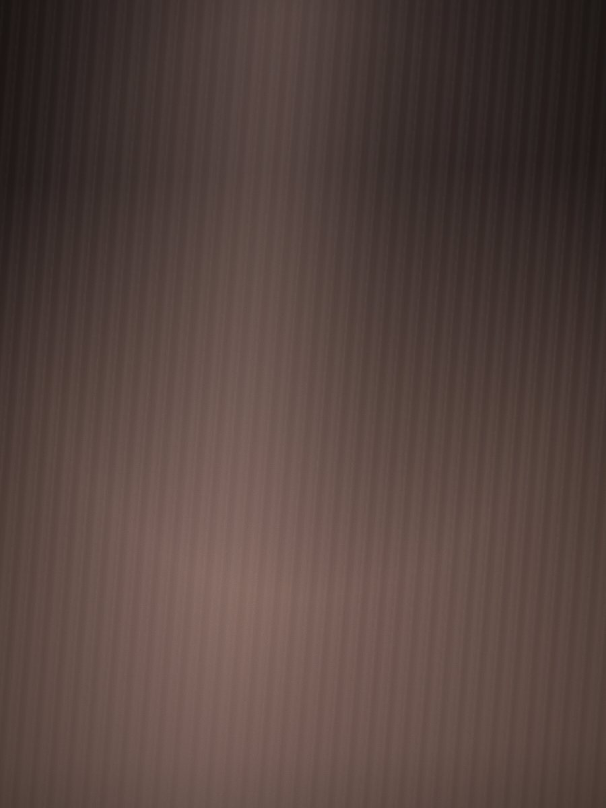

Rubios, balayage y morochas. Te espero en Boedo.
Escribime por WhatsApp Maza 1193 · Boedo, CABATrabajos reales, sin filtro y sin retoque: el color que ves acá es el que te llevás.
Antes y después



Si lo que buscás no está acá, escribime igual y lo vemos.
Mechas pintadas a mano, que crecen parejas y no te obligan a volver cada mes.
Del castaño al rubio que tenés en la cabeza, cuidando que el pelo llegue bien.
Castaños profundos con reflejos que aparecen cuando te da la luz.
El precio del color depende del largo y de cómo esté tu pelo, así que no lo puedo poner en una lista.
Mandame una foto y te digo
Soy Didy y trabajo el color acá en Boedo. Rubios, balayage y morochas: eso es lo mío.
Cada pelo llega distinto. Por eso lo primero es escucharte y decirte qué se puede hacer con el tuyo.
falta que Didy pase los días y horarios